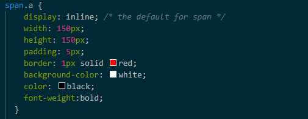
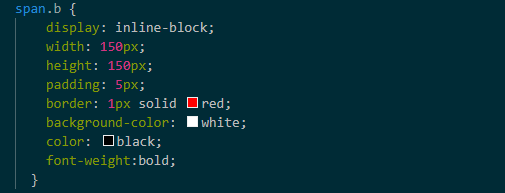

When building websites, you sometimes want to put 'boxes' into your pages and display them in order.
So the web developers would use something called 'display' in their coding to specify the display behaviour of an element, and to control the layout of the element.
One way is to use the 'inline' element. It literally displays the element inline/same line. This means that this does NOT start on a new line and only takes up as much width as its content.
So even if you wanted to specify width and height in the coding, they will have no effects.
In the design part of the web building process, it would look something like this:

On the webpage, this would look like this:
"Meditation is a practice where an individual uses a technique. Such as mindfulness to train attention and awareness, and achieve a mentally clear and emotionally calm and stable state."
(Notice how width and heith are the same 150px and so should be a square, but it is not as shown here)
On the other hand, using display: inline-block, the specified width and height values will take effect
In the design part of the web building process, it would look something like this:

On the webpage, this would look like this:
"Meditation is a practice where an individual uses a technique. Such as mindfulness to train attention and awareness, and achieve a mentally clear and emotionally calm and stable state.""
(Notice how as specified in the style sheet, both width and height of 150px are in place so shown as squares)